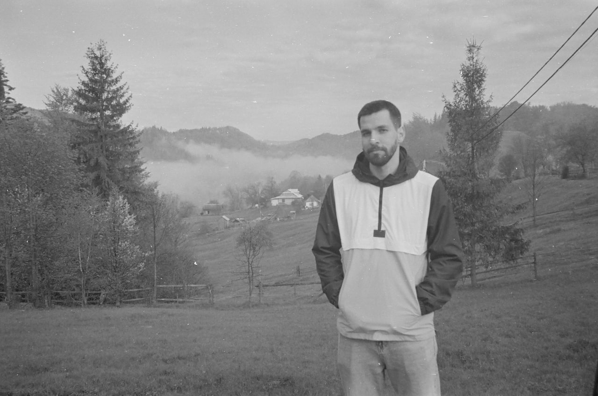

Serhii Tytiuk
Serhii Tytiuk is a quantitative researcher and polling professional. He has a 3-year experience in a survey research, research methods and data analysis.

WORK EXPERIENCE
Analyst, the Ukrainian Institute
Conducting research on the state and prospects of Ukrainian studies in the world (compiling a database, developing a questionnaire)
Writing informational materials on the Ukrainian cultural heritage destroyed during the war (project “Postcards from Ukraine”)
Writing analytical notes for the Ministry of Foreign Affairs of Ukraine on the topic of cultural diplomacy
EDUCATION
Kyiv School of Economics 2020-in progress
Master’s degree in Public Policy and Governance
Thesis: Overcoming the consequences of unequal access of students from different territories of Ukraine to secondary education due to the COVID-19 pandemic and the war with Russia
Taras Shevchenko National University of Kyiv 2013-2017
Bachelor’s degree, Political science
Thesis: The Impact of Automation on Social Inequality and Democracy


SKILLS
LANGUAGES
| Language | Reading | Writing | Speaking |
|---|---|---|---|
| English | C1 | B2 | B2 |
| Ukrainian | C2 | C2 | C2 |
| Polish | A1 | A1 | A1 |